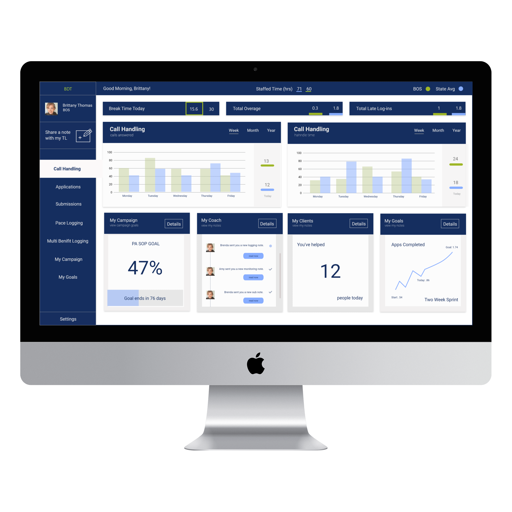

The BOS Dashboard: Visualizing Success
Using Data Visualization for Better Decisions
Introduction
Data Visualization in a tool that is providing great value to businesses thanks to incredible libraries like JavaScript D3: d3js.org
My vision for the organization I work for was to find a way to present data that not only lent to good decisions but lent to good decisions employees found meaningful to themselves as well.
Discovery
The Discovery phase for this project stems from my previous work with the Mentor Map. Please view more here.
IDEATION
I went through numerous iterations of this dashboard concept. My main goal was to split the dashboard into two sections. The top half gives pertinent information about employees' day to day performance and productivity. The second half is data presented to show why the former is valuable.
Dashboard designing was a new concept I was eager to try. In order to create the visual layout sucessfully, I followed these following UI dashboard principles:
- gradual reveal
- compactness and modularity
- guide attention
- support casual use
- lead to action
- relevance
- explanation before information